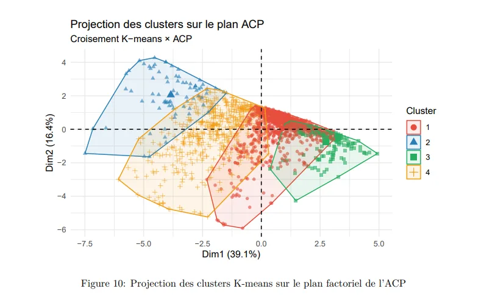

SAÉ 4.02 · Semestre 4 · équipe de 3
Classer 193 pays selon leur profil sanitaire
Analyse multivariée sous R des données d’espérance de vie de l’OMS (2000 à 2015) : ACP, AFCM, puis classification des pays en quatre profils.

Le problème
Quels facteurs pèsent le plus sur l’espérance de vie, et peut-on regrouper les pays en profils sanitaires distincts ?
Contexte
Jeu de données Life Expectancy publié par l’OMS : 193 pays sur 15 ans, soit 2 938 observations et 22 variables.
La démarche
Auditer la qualité
Valeurs manquantes nombreuses (448 pour le PIB, 163 pour la scolarisation) : suppression des lignes incomplètes, soit 1 855 observations conservées, puis centrage-réduction des variables.
Résumer l’information
ACP sur 10 variables quantitatives : trois axes résument 68,4 % de la variance. Le premier (39,1 %) oppose scolarisation et espérance de vie à la mortalité adulte et au VIH. Une AFCM complète l’analyse sur les variables qualitatives.
Classer les pays
Classification ascendante hiérarchique (méthode de Ward) croisée avec les K-means. Le dendrogramme et l’indice de Calinski-Harabasz convergent vers 4 groupes, confirmés par un graphique de silhouette.
Livrables
- Rapport RMarkdown complet (cercles de corrélation, dendrogrammes, interprétations)
Résultats
- Quatre profils : critique (espérance de vie moyenne de 50,2 ans), vulnérable (62,1 ans), en développement avancé (73,8 ans), économies développées (80,5 ans).
- Le statut binaire « développé / en développement » de l’OMS masque une forte hétérogénéité entre pays.
Limites
- Supprimer les lignes incomplètes a retiré environ un tiers des observations : un biais d’attrition qu’une méthode d’imputation aurait limité.
Ce que j’en retiens
Le traitement des données manquantes conditionne toute la suite de l’analyse. Je privilégierai désormais des méthodes d’imputation plutôt que la suppression.
Pour les enseignants : SAÉ 4.02, compétences et apprentissages critiques
Reporting d’une analyse multivariée · semestre 4 · Projet de synthèse
Compétences mobilisées
Apprentissages critiques
AC22.03Comprendre l’intérêt des analyses multivariées pour synthétiser et résumer l’informationAC22.05Apprécier les limites de validité et les conditions d’application d’une analyseAC23.04Prendre conscience de la rigueur requise dans ses productions et dans la communication
Ressources mobilisées
- R4.02 Méthodes factorielles
- R4.03 Classification automatique
- R4.05 Communication scientifique
- R4.250 Compléments de classification